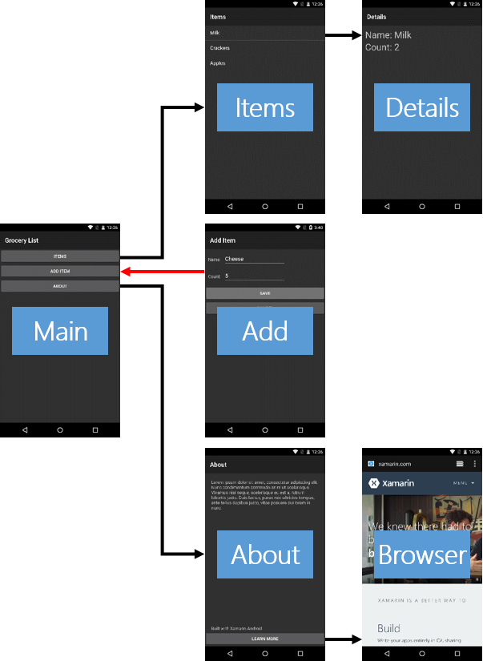

Durée
10 minutes
Objectifs
Ce TP vous montre comment récupérer les résultats d'une activité. Vous verrez comment charger les résultats dans l'activité cible et comment les récupérer dans l'activité source. La ligne rouge dans l'image ci-dessous indique la partie de l'application sur laquelle vous allez travailler.
Challenge
Utilisez les recommendations ci-dessous pour réaliser l'exercice.
- Ouvrez AddItemActivity.cs.
- Dans
OnSaveClick, créez un Intent et chargez les valeurs denameetcountdans les Extras. - Appelez
SetResultet passez l'Intent et résultat. - Appelez
Finish. - Ouvrez MainActivity.cs.
- Modifiez la méthode
OnAddItemClickpour utiliserStartActivityForResultà la place deStartActivity. - Dans
OnActivityResultajoutez des vérification pour vous assurez que le code estOket que ce que vous avez appelé correspond à ce que vous avez passé àStartActivityForResult. - Retrouvez le name et le count depuis l'Intent Extras.
- Créez un nouvel élément en utilisant les valeurs du name et du count. Ajoutez le à la collection des éléments.
- Exécutez et testez votre applicaiton.
Steps
Below are the step-by-step instructions to implement the exercise.
Load Results
- Open AddItemActivity.cs.
-
Inside
OnSaveClick, create an Intent that you will use to hold the return values. The code is provided below, hidden behind a button. -
Load the values the for
nameandcountinto the Intent Extras. Use "ItemName" and "ItemCount" for keys when you load the Extras. The code is provided below, hidden behind a button. -
Call the version of
SetResultthat takes 2 parameters. PassResult.Okand the Intent. The code is provided below, hidden behind a button. -
Calling
SetResultloads the data you want to return, but it does not end the current Activity. Call theFinishmethod to end the Add Item Activity and return the user to the Main Activity.
Retrieve Results
- Open MainActivity.cs.
-
Modify the
OnAddItemClickmethod to useStartActivityForResultinstead ofStartActivity. Pass the Intent as before but add a second parameter with the integer value 100 to serve as the request code. The code is provided below, hidden behind a button. -
Locate the
OnActivityResultmethod. -
Add an
ifstatement toOnActivityResultthat verifies that therequestCodeparameter is 100 and theresultCodeparameter isResult.Ok. The code is provided below, hidden behind a button. - Retrieve the item name and count from the Intent Extras. The code is provided below, hidden behind a button.
- Create a new Item using the name and count values. Add it to the collection of Items. The code is provided below, hidden behind a button.
Test the App
- Run the app.
- Navigate to the Add Item Activity.
- Enter values for Name and Count, then touch the Save button. This should return you to the Main Activity.
- Navigate to the Items Activity and verify your new item is now in the list.
Résumé
Dans cette atelier, vous avez renvoyé des données et un indicateur de succès / échec d'une activité. Notez que vous avez passé une chaîne et un entier à la place d'un objet - ceci est courant dans Android car les références d'objet ne peuvent pas être passé entre activités.